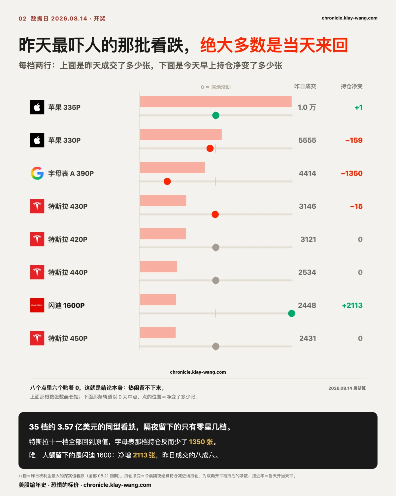
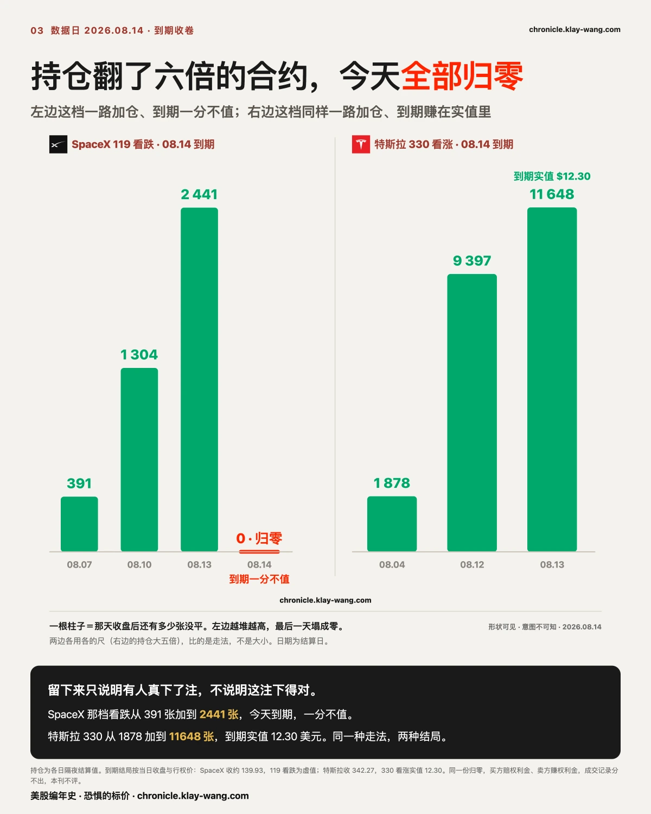
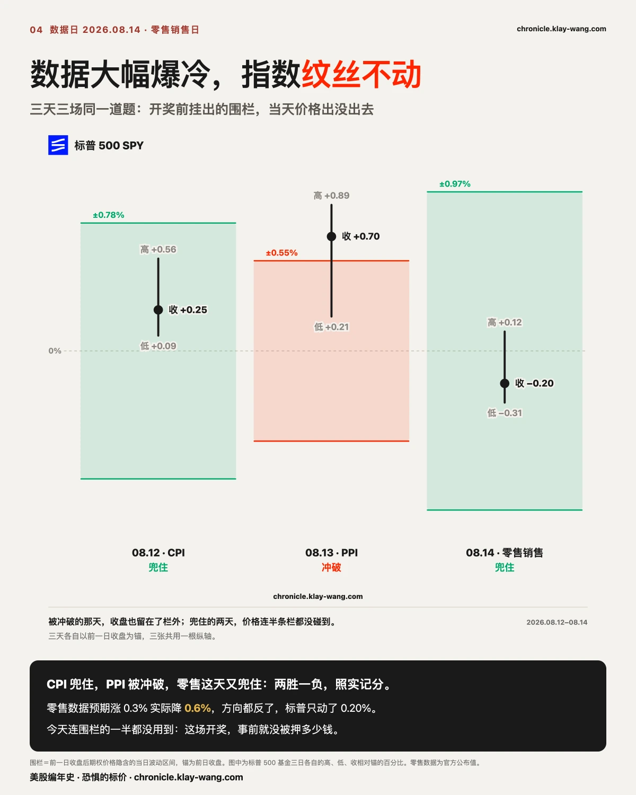
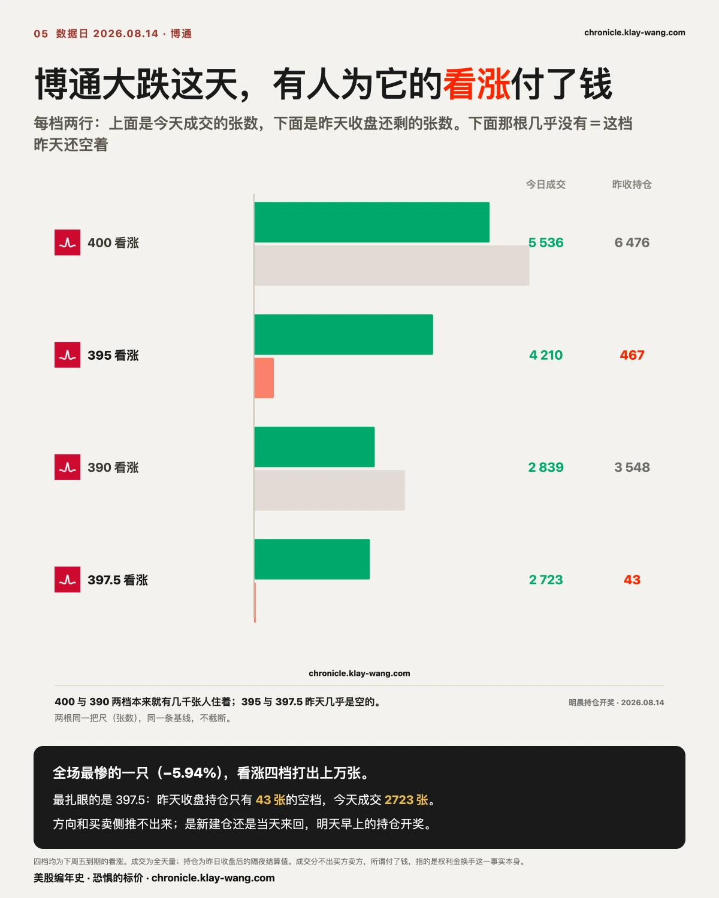
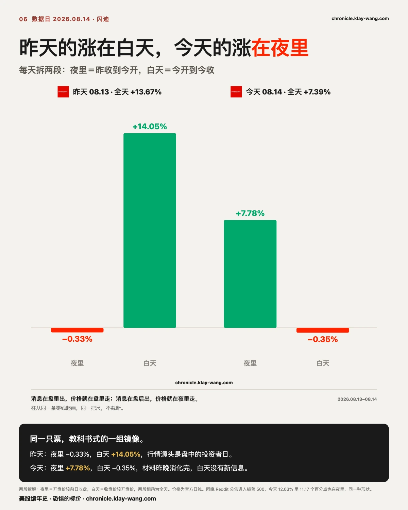
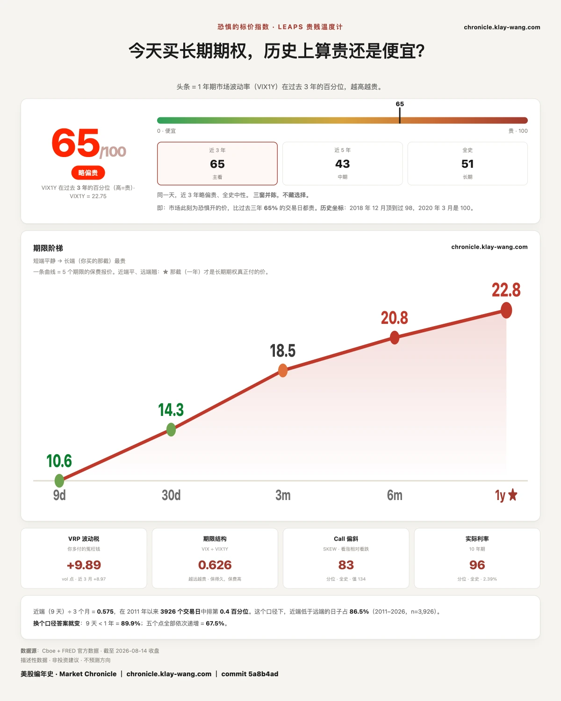

4500 万博 36 亿？幸好赌的不是崩盘 · 8.10-8.14
⚡ 三行速览
- 昨天那组约 60 万张的远期看跌合约，今晨结算后几乎一张不少地留进了持仓：第三座坐实，三张价目表全部为真。
- 同一张榜单上的另外两批钱走了：35 档深实值看跌绝大多数当天来回，闪迪三档八成平掉。热闹和下注不是一回事。
- 一档持仓一周内涨到六倍的看跌合约今天到期归零；零售数据大幅低于预期，指数几乎没动，半导体内部拉开 13 个百分点。
这一期讲什么
第 1 节是主菜：昨天同一张异动榜上的三批钱，今天早上开奖，结果完全不同。
第 2 节把上周挂出的两笔到期合约正式收卷，其中一档在注定归零的那一周里持仓还在往上加。
第 3 节讲零售数据爆冷的一天里，围栏第三次接受同题测验；第 4 节讲闪迪连着两天的镜像。
第 5 节对账，第 6 节温度计。不着急的话，读完第 1 节和最后一节就有数了。

〔对账 · 开奖〕60 万张留下了 99.9%，另一批钱天亮就走了
先交代昨天许下的账。昨天我们写：12.18 那三档的进场持仓是 8307、11086、6917 张，
如果今天早上跳到 15 万、30 万、15 万这个量级，就是第三次坐实；没跟上，那一组就只是当天来回。
两种结果我们都答应写。今天早上的结算数字是：
| 腿 | 进场持仓 | 昨日成交 | 今晨持仓 | 留下比例 |
|---|---|---|---|---|
| 610 看跌 | 8307 | 150143 | 158358 | 99.9% |
| 480 看跌 | 11086 | 300173 | 311132 | 99.9% |
| 350 看跌 | 6917 | 150105 | 156963 | 99.9% |
三档几乎一张不少地留了下来，而且三档之间 1 比 1.97 比 0.99，建仓那天的 1 比 2 比 1 原样保住。
今天这三档合计只成交了 4 张。钱是真进来的，进来之后就收工了。
这是两天里的第三座，加上前两座，同一个指数上现在躺着约 120 万张同型合约，三张价目表全部为真。
同一张异动榜上，昨天还有两批钱看起来同样吓人。今天早上一并开奖：
那批深实值看跌合约，绝大多数是当天来回。 昨天 35 档、横跨 11 只票、约 3.57 亿美元权利金的那批，
特斯拉占了十一档，今晨全部回到原值：430 看跌昨天成交 3146 张，持仓从 271 变成 256，反而少了；
450、440、480、470 各档一张没留。谷歌 A 类那档不但没留，持仓从 1933 降到 583。
整批里真正留下的只有闪迪 1600 看跌（持仓从 924 涨到 3037，留下昨日成交的八成六）和苹果 317、320 两档。
闪迪那三档看涨，八成的量当天平掉了。 1390 那档持仓从 363 涨到 467，没有跳到四位数；
凭空开出来的 1455 和 1475 两档分别留下 100 张和 188 张。确实有新仓，但相对昨天五六百张的成交，留下的是小头。

把三个结果放在一起，今天最值得带走的判据就出来了：
成交量除以持仓的那个倍数，只说明这一档今天很热闹，它分不出建仓和换手，能分开的只有第二天早上的持仓。
昨天蝶楼三档和闪迪三档在同一张榜上、同样是成交远超持仓，一夜结算之后，一个留下 99.9%，一个留下不到三成。
异动榜上的名次，和真下注的名次，不是同一张榜。
三句边界必须同时说。留下来只说明有仓位过夜，买方开仓和卖方开仓都会让持仓上升，方向推不出来。
留下的净数是双向开平相抵后的结果，不等于有人净买了这么多。
闪迪昨天开投资者日，事件日的换手天然偏高，和无事件日的远期结构不同尺，这里只作并列，不作优劣。

〔个股 · 收卷〕在注定归零的那一周里，持仓还在往上加
上周四挂出的两笔到期合约，昨天我们写了这一栏空着，结算数字等明天。今天到期，正式收卷。
特斯拉两档看涨，全部实值收场。 收盘 342.27，330 那档实值 12.30 美元，335 那档实值 7.30 美元。
更重要的是持仓的走法：330 那档从 08.04 首次被抓到时的 1878 张，到 08.12 的 9397 张，再到进入到期日的 11648 张；
335 那档从 2453 到 16997 再到 17112 张。从被抓到那天到到期，持仓一路在增，没有中途散掉。
SpaceX 那四档，三档看涨全部实值，一档看跌归零。 收盘约 139.93，119、123、127 三档看涨分别实值 20.93、16.93、12.93 美元。
而 119 那档看跌，持仓从 08.07 的 391 张一路涨到进入到期日的 2441 张，六倍出头，今天全部作废。
在它注定归零的那一周里，仓位还在往上加。 这句话只描述我们看到的形状，不描述任何人的意图：
它可以是对冲的一条腿，可以是价差的一条腿，也可以是保证金安排的一部分，我们分不出来，也不猜。
这一笔正好给第 1 节的判据补上另一半：
留下来只说明有人真下了注，不说明这注下得对。 特斯拉两档留得漂亮、到期实值；
SpaceX 那档看跌同样留得漂亮，到期一分不值。留没留下和对不对，是两个问题，本刊只测第一个，第二个不评。
同一份归零，买方赔掉权利金，卖方赚到权利金，成交记录里长得完全一样，所以谁赚谁赔这件事我们永远不写。

〔大盘 · 围栏〕数据大幅爆冷，指数纹丝不动
零售销售是今天的开奖题。7 月环比降 0.6%，市场此前预期是涨 0.3%，一年多来最大的一次下滑，方向都反了。
开奖前，期权市场照例挂出了当天的围栏：SPY 上下 7.58 点（0.97%），区间 770.30 到 785.46；
QQQ 上下 11.50 点（1.57%），区间 720.57 到 743.57。锚都是昨天的收盘。
结果：SPY 全天最高 778.80、最低 775.43、收 776.34，高低收全在栏内，连栏的一半都没用到。
QQQ 最高 734.39、最低 728.32、收 731.07，同样全在栏内。
这是同一道题连续第三场：CPI 那天兜住，PPI 那天被冲破，零售这天又兜住。
兜住两场、失手一场，我们照实记分。数据本身爆冷而指数纹丝不动，说明这场开奖的赔率表事前就压得很低，
钱没有在这个数字上摆多少仓位。
指数不动，不等于下面没事。今天真正的形状是半导体内部劈开了 13 个百分点：
闪迪涨 7.39%、AMD 涨 6.50%、美光涨 2.30% 在一头，博通跌 5.94%、英特尔跌 1.97%、台积电跌 0.96% 在另一头。
七巨头全部在正负 1% 以内，那是噪声，不是普跌。涨的不全是存储（AMD 不是存储），
跌得最狠的也是半导体（博通）。这不是存储对大盘，是半导体自己劈开了。
谁的钱从哪儿去了哪儿，我们从来没测过，也不写。
博通值得多说一句。它今天不只有全场最大的跌幅，期权侧也有动静：
贴着现价的 395 看涨全天成交 4210 张，原持仓只有 467 张；397.5 那一档成交 2723 张，原持仓只有 43 张，此前几乎无人持有。
能说的只有一句事实：有人在跌下来的价位上，为看涨的权利付了钱。
方向和买卖侧推不出来；是新建仓还是当天来回，明天早上的持仓会回答，这条明天回来对。

另外提醒一件今天特有的事。今天是二季度 13F 报告的申报截止日，你大概率刷到了一批某某清仓某某的标题。
13F 是季末持仓快照，二季度截至 6.30，申报期限 45 天，正好是今天。
所以那些文件是今天才出现的，里面描述的交易发生在六周以前。 新闻是新的，交易是旧的。
拿一份描述 6 月底持仓的文件解释今天任何一只票的涨跌，是把申报日期当成了交易日期。

〔个股 · 闪迪〕同一只票，两天两种定价
昨天我们把闪迪的 13.67% 拆成两段：跳空负 0.33%，盘中正 14.05%，涨幅全部是白天当着所有人的面走出来的。
今天正好反过来。跳空正 7.78%，盘中负 0.35%，涨幅全部是夜里定出来的，开盘 1646.93，收盘 1641.11，
白天基本原地。连着两天读，同一只票给了教科书式的一组镜像：
昨天的行情源头是盘中的投资者日，消息在盘里出，价格就在盘里走；
昨晚市场消化完整份材料，今天的价在开盘前就定完了，白天没有新信息，就没有新行情。
同一晚上还有一个更极端的例子。Reddit 昨天盘后公告将于 8.18 开盘前正式进入标普 500，
今天全天涨 12.63%，其中 11.17 个百分点是跳空，白天只走了 1.31。指数纳入的公告发生在盘后，
定价自然发生在夜里，这正是隔夜跳空这把尺子为它而生的形状。它不在我们的期权观察名单里，只有价格没有权利金，照实说。
昨天挂的第三个问题也一并回答：今天 17 只票里 16 只盘中段为负，白天又开始卖了，
但除了闪迪和美光，夜里没有大定价。三天连起来：周三夜里定价白天反悔，周四夜里没定价白天自己走，
周五夜里温和白天轻卖。两段拆解连读三天，每天的形状都不一样，这正是把一天拆成两段的意义。
〔对账 · 字据〕昨天挂的其余几条
- 英伟达翻转位：203.78，昨天 202.93，仍在 200 到 210 判不了区，继续挂。
- 博通期限倒挂：一个月 49.38 对一年 48.53，差 0.85，昨天 0.78，继续走宽，仍是 19 只里唯一倒挂的。它今天跌 5.94%，倒挂与下跌同日出现，只并置，不归因。
- 博通 0824 那档 420 看跌：下周一到期再对。
- 谷歌 08.21 的 320 与 310 看跌、SpaceX 08.21 的 16 个价位、美光 930 看涨阶梯：下周五月度到期日统一收卷，那一天是本周所有 08.21 案子的总开奖日。

〔大盘 · 恐惧的标价〕67.2 之后：回落
昨天挂的问题是 67.2 之后接着往上还是回落。今天的答案：回落。
读数 65.3，昨天 67.2，前天 61.9。卡面记 65 / 100。
一年期波动率 22.75，比昨天的 22.82 低了 0.07。
从最短端到一年，五档全部比昨天便宜了一点：9 天 10.61，一个月 14.25，三个月 18.46，六个月 20.80，一年 22.75。
把这个数放回今天的盘面里读，它和围栏那一节是同一句话：
零售数据大幅爆冷的开奖日，指数纹丝不动，而保险从最短端到一年期全线小幅降价。
这场开奖，事前没人愿意为它多付保费，事后也没人觉得需要补买。
老规矩：这个数字不是给买保险的人看的，是给卖保险的人开的价。
它不告诉你明天涨跌。它告诉你，那批必须为未来一年报价、并且要为报错付钱的人，今天报了多少。
今天值得带走的三句话
- 成交量的榜和下注的榜不是同一张榜，分开它们的不是盘中的热闹，是第二天早上的持仓。
- 仓位留下来只说明有人真下了注，不说明这注下得对。持仓一周翻六倍然后归零，两件事同时为真。
- 新闻的日期和交易的日期是两回事。申报截止日那天，你会看到一批六周前的旧交易，穿着今天的标题。
预告与下一期回访
下周五 8.21 是月度期权到期日，本周记录在案的合约大多数在那天开奖：
三座价目表之外的 08.21 名单（谷歌两档看跌、SpaceX 16 个价位、美光看涨阶梯、闪迪 1600 上下两侧）逐案收卷。
下周二 Reddit 正式进入标普 500，纳入公告日的跳空已经记下，生效日的跳空到时候对照。
下周三是波动率期货的换月日，温度计曲线那几天的形状要连着这件事一起读。
除此之外，下一期回来对五件：今晨留下来的闪迪 1600 看跌那 3037 张持仓接下来怎么走；
博通今天两档贴价看涨（395 与 397.5）明晨持仓是留下还是来回；
博通的期限倒挂在 0.85 之后是收敛还是继续走宽；英伟达翻转位出不出 200 到 210 这个区间；
以及被兜住两次、冲破一次的围栏，下周一的第四场。
本站不提供投资建议，不预测方向，不做择时。